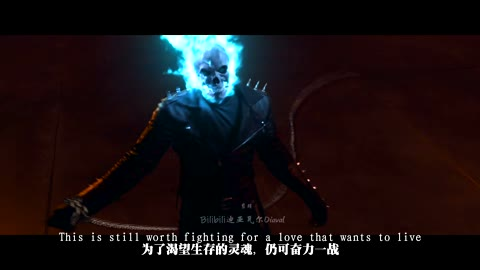
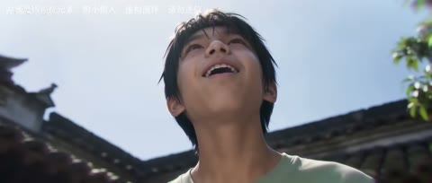
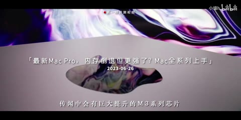

← 案例图谱H24 / 主要视觉研究样本
【三代恶灵骑士/高燃/混剪】前方高能！红蓝地狱烈火燃烧着我们不屈的复仇之魂！
迪亚瓦尔Diaval · 234万播放快照 · ≥10万 · B站原作 ↗
蓝火是可研究的选择改色；骷髅、火焰几何和链条动作主要来自影视素材。分清“改色”与“创造动作”，才能正确估计制作量。

约95.262秒 · 案例代表帧从画面里找依据
这一例先看什么
原影视人物/火焰与新增名牌、局部保色分层说明，后段青蓝火和暖环境的分离有明确视觉用途。
审美判断
黑白高反差中的脸部、暖色与红色标识形成焦点，底部双行字保留黑边对比。
迁移到自己的题材
战斗、运动、竞速、预告、产品性能演示、情绪冲突的高潮。
教学提问：观众能指出谁在攻击、朝哪边、是否击中吗？哪些是原素材的动作，哪些才是新增剪接或合成？
带画面的分析单元
图像标出取样时间，对应观察中的关键状态。单帧不能独立证明运动，连续性请结合摘录。表达作用与应用场景是教学解读，复现路线是建议，不是原作者工程还原。
分析单元 01 / 0—24秒
黑白高对比／局部保色／角色名牌
实际观察
前段人物、马和环境多为黑白高对比，部分暖色/红色标识保留；12秒白化剪影，20秒人物和环形名牌。
表达作用（教学解读）
建立段落、材质和情绪的一致性；颜色变化可以承担信息，而不只是美化。
具体应用场景
多片源混剪、人物立场、回忆/现实区分、冷暖转折、品牌统一。
复现建议（非原作者工程还原）
饱和度/曲线与颜色或人物遮罩组合；文字圆环和牌条用独立图层。
直出判断：高对比与名牌容易；自然局部保色需遮罩检查
常见误用：所有镜头同一滤镜；肤色被破坏；饱和度代替焦点；色彩含义前后矛盾。
分析单元 02 / 4.129—6.048秒
白闪／阈值化轮廓连接
实际观察
牛仔转马蹄高反差构图，近5.7秒白闪、5.881秒宽构图；阈值闪烁和马运动不逐个计为新镜。
表达作用（教学解读）
短暂中断视觉连续性，强调接触、转折或心理断裂；其价值来自前后的对比。
具体应用场景
打击点、快速连接、记忆跳跃、段落转折；需要根据内容选择强度。
复现建议（非原作者工程还原）
短曝光曲线或白色叠层；阈值/色阶抽取轮廓后与源片混合，连接处少量帧变亮。
直出判断：容易，保留闪前闪后素材即可
常见误用：把闪烁当节奏本身；没有稳定画面作参照；为掩盖动作不清持续加闪。
分析单元 03 / 24—72秒
人物细节／道具／环境穿插
实际观察
面部、手、坠落、斧头、墓地和病床交替，背景多灰，火和皮肤偏暖。
表达作用（教学解读）
让一次画面替换有理由：继续动作、转换观点、给反应，或通过相似形状建立联系。
具体应用场景
动作、对话、运动、情绪混剪、多来源的视觉联系。
复现建议（非原作者工程还原）
先按叙事功能挑选反应/道具/环境镜头，再统一黑位和主色；并非每次插入都需要转场插件。
直出判断：剪接与统一色调容易；选材和语义对应需人工决策
常见误用：只匹配颜色不顾动作阶段；方向突变；每次连接都加过渡掩盖问题。
分析单元 04 / 76—112秒
蓝火改色／发光轮廓／人物与暖背景分离
实际观察
76秒蓝焰骷髅、88秒蓝火轮胎、94秒链条蓝而橙色地面保留；95.262秒手臂转暖，97.18秒背景红而头焰仍蓝。
表达作用（教学解读）
以蓝火与暖环境形成分离，改变已有火焰的色彩关系；骷髅、火焰几何和动作仍依赖原影视素材。
具体应用场景
已有能量或火焰的色相设计、角色阵营区分、冷暖冲突。复杂遮挡、肤色排除和环境溢光需检查。
复现建议（非原作者工程还原）
对火焰原色建立色相/亮度选区，改到青蓝，辅以遮罩和溢光匹配；不能把原片骷髅/火焰几何也归为UP制作。
直出判断：简化蓝火调色容易；复杂遮挡、肤色排除与空间溢光需逐镜调试
常见误用：所有镜头同一滤镜；肤色被破坏；饱和度代替焦点；色彩含义前后矛盾。
分析单元 05 / 94—98秒
链条挥舞／空间弧线／亮度遮挡连接
实际观察
94秒俯视挥链连续运动；95.679转低角度链条环绕，97.014亮链遮近景、97.18转红墙低角度。至少两次主构图切换，其余链条位置更新为镜内运动。
表达作用（教学解读）
链条的空间弧线与亮度遮挡连接不同角度；原动作保持因果，光迹帮助强调方向。
具体应用场景
挥舞、甩动、武器轨迹、运动方向连接。先使用可信动作素材，再考虑简化弧光或遮挡。
复现建议（非原作者工程还原）
真实链条动作来自影视素材；简化弧光可路径描边+寿命衰减+辉光，真实前后遮挡需深度/遮罩。
直出判断：平面弧光容易；精确三维链条动作和遮挡不属一键后期
常见误用：只匹配颜色不顾动作阶段；方向突变；每次连接都加过渡掩盖问题。
分析单元 06 / 120—188秒
黑底线条／多脸叠化／黑底白字片尾
实际观察
120秒黑底红交叉线，184秒三个人脸重叠，188秒黑底名单。
表达作用（教学解读）
图形、叠脸和名单分别承担段落标记、群体联想与署名收束。三种状态应分开看，不能靠区间中点图证明。
具体应用场景
人物群像片尾、纪念短片、系列角色回收、署名收束；多脸叠化需要控制透明度与眼位。
复现建议（非原作者工程还原）
图形线条关键帧；人脸裁切/遮罩和透明度交叉；片尾文字排版。
直出判断：线条和片尾容易，多脸合成需位置与透明度调试
常见误用：窗口太多无主次，眼位错位、边框挤脸，层的出现没有叙事理由。
用连续画面核对
保留原研究的多段局部摘录。片段含音轨不代表已听审；本资料不评价音乐卡点或对白节奏。
短时变化怎样理解
4.129–6.048秒两次、94–98秒两次；链条每帧移动和火焰闪亮不加刀。
把镜头连接、版式更新、局部图层变化和镜内运动分开记录。所查窗口是下限，不是全片平均或AI／人工排名。
原始逐窗记录 →这次练习的约束
用三个动作片段组成8秒“准备—碰撞—结果”，先不用特效；再仅加一次光效和一次短停顿，检验是否更清楚。
先写“我希望观众明白／感到什么”，再选本页的一种手法。完成无效果基础版后再加层；解释新增层带来的收益和代价。
打开练习与复盘表 →来源、观看范围与制作归属
实际检查范围：实际查看48张约4秒概览0–188.188（3表），4.129–6.048与9.009–10.928共48密集帧（4表，约11.99/s）；94–97.931蓝火链条48帧（4表，约11.99/s）。192.021秒1080p23.976fps；三段4秒摘录。未听审、未连续完整音画观看。
制作线索：迪亚瓦尔Diaval，第一方页面234万、2019-06-20；作者列三部影视素材，自述Vegas Pro15+Colordirector微调，蓝火自行调色、原片没有。该流程是作者陈述，未与原片逐帧独立比对。
边界：作者明确蓝火改色及软件，但未与原片逐帧核对。简化色相选区易，真实火焰几何、骷髅和链条动作来自素材。
播放快照保存时间（UTC）：2026-10-20T10:12:02.323992+00:00。H30制作方式为推定；同源改编、仿作和转载依原记录标注。
原始案例记录 · 选样表把你的判断留下来
笔记仅尝试保存在本机浏览器；浏览器策略可能限制本地文件存储，重要内容请导出。
沿着同一问题继续阅读

AI13方向、冲击与节奏
前段日照庭院的喜剧反应与后段冷暖室内、绿焰幻象区分，眼镜绿火、面具和手中道具特写可作为局部效果例。
主要样本8个分析单元
 AI47
AI47细节、反应与转折
星空漂浮、舞厅、卡通群岛、玩偶舞台形成不同媒介段落；服装与双人关系作为锚点，场景丰富度不能仅归功剪辑转场。
主要样本7个分析单元

H48意象、色彩与纪实
访谈引入、作品与幕后、群像三联、品牌字卡再回访谈形成概览可见结构；同一团队素材风格一致，同时带来样本相关性。
主要样本6个分析单元